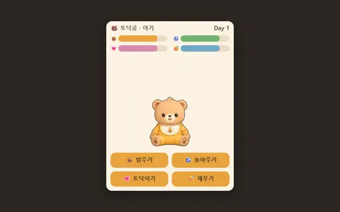
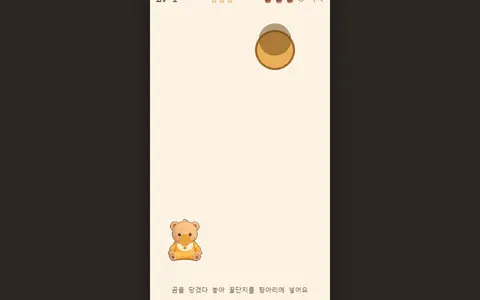
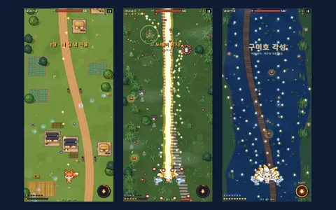
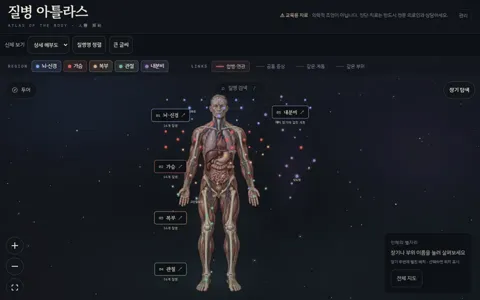
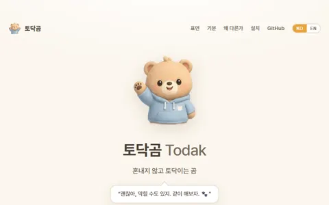
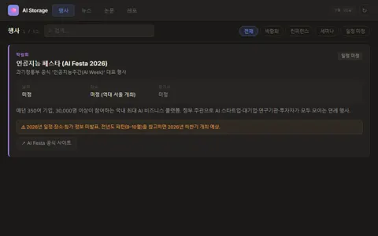
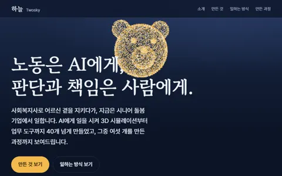

39 / 전체
전체 작업물
네 섹션의 작업물을 한곳에서 찾고 거릅니다. 검색 단축키로 어느 쪽에서든 찾을 수 있습니다.
- 구조도 발송 명단 추출 앱 조건을 적으면 AI가 조회문을 쓰고, 실행과 발송은 사람이 한다. 구조 보기 →
- 구조도 상담 품질 카드 스킬 상담 기록을 넣으면 품질 코칭 카드 1건을 쓰는 AI 스킬. 구조 보기 →
- 구조도 만족도 조사 발송 자동화 상담 이력 파일에서 만족도 조사 문자 발송 목록을 만든다. 구조 보기 →
- 구조도 QA 주간 브리핑 대시보드 매일 아침 점검 시트를 읽어 본부별 확인 화면으로 낸다. 구조 보기 →
- 구조도 주간보호 감사 문자 계약을 마친 보호자에게 다음 날 감사 문자를 사람 승인 후 보낸다. 구조 보기 →
- 구조도 상담 Q&A 사이트 노션 Q&A 212건을 검색·수정 이력이 있는 사내 사이트로 옮겼다. 구조 보기 →
- 비공개 상담 녹취 청취 도구 점검 표에서 바로 통화 녹음을 재생한다.
- 비공개 자동화 상태판 매일 도는 자동 작업 8개가 실제로 돌았는지 5분마다 확인한다.
- 비공개 본부 점검 시트 통합 본부 3곳의 점검 시트 4탭을 2탭으로 합치며 셀 차이 0으로 옮겼다.
- 비공개 발송 성과 분석 스킬 발송 성과 시트를 읽어 분석 문서를 써 준다.
- 비공개 보고서 양식 엔진 회사 공식 양식대로 보고용 슬라이드를 만든다.
- 비공개 확인 사항 작성 스킬 상담 메모를 넣으면 점검 시트 3칸을 기존 작성자 문체로 채운다.
- 비공개 발송 대상 추출기 연도별 상담 이력을 한 DB로 모아 기간·유형으로 발송 대상을 뽑는다.
- 만드는 중 QA 대시보드 설계 스튜디오 대시보드 시안을 그려 보는 도구. 뼈대 완성, 차트 14종 작업 예정.
- 공개 토닥곰 꿀단지 받기 떨어지는 꿀단지를 곰이 받아 내는 미니게임. 열기 ↗ (새 탭)

공개 토닥곰 키우기 아기곰부터 노년곰까지 돌보며 키우는 다마고치. 열기 ↗ (새 탭)
공개 토닥곰 던지기 새총처럼 곰을 당겼다 놓아 꿀단지를 항아리에 넣는 물리 퍼즐. 열기 ↗ (새 탭)
공개 구미호 슈팅 휴대폰 세로 화면 탄막 슈팅. HTML 파일 하나로 돌아간다. 열기 ↗ (새 탭)- 비공개 regex-dungeon 정규식을 배우는 터미널 로그라이크. npm에 공개돼 npx 한 줄로 바로 시작한다.
- 만드는 중 구미호 길드 현황판 모바일 게임 동맹 길드원 현황판. 설계 완료, 구현 예정.

공개 Disease Atlas 질병 80개를 인체 부위와 관계선으로 잇는 질병 지도. 열기 ↗ (새 탭)- 공개 지도로 읽는 전쟁사 전쟁 60개·사건 189개를 지도에서 찾고 원인·흐름·영향을 따라 읽는 역사 탐험 웹앱. 코드 보기 ↗ (새 탭)
- 공개 인공 생명 정원 행동 규칙 없이 사냥·무리·종 분화가 생기는 인공 생명 시뮬레이터. 열기 ↗ (새 탭)

공개 토닥곰 우주 곰 캐릭터 하나를 터미널, GitHub 프로필, 데스크톱 펫에 같은 성격으로 옮겼다. 열기 ↗ (새 탭)
공개 AI 정보 창고 행사, 뉴스, 논문, 채용 소식을 주 3회 자동으로 모으는 개인 대시보드. 열기 ↗ (새 탭)- 공개 제로 온보딩 코딩을 모르는 팀원을 위한 AI 코딩 도구 입문 가이드. 열기 ↗ (새 탭)
- 비공개 대한민국 노인 현황 노인 인구·장기요양 통계를 한 화면에 모은 정적 대시보드.
- 비공개 Astra Ops 내 PC의 git 저장소 상태를 한눈에 보는 개발 관제판.
- 비공개 make-it 짧은 아이디어를 완성품까지 끌고 가는 AI 작업 절차.
- 비공개 AI·개발 훈련장 비개발자용 AI·개발·파이썬 학습장 28단원.
- 비공개 세션 기록 검색 지난 AI 작업 대화를 한국어로 찾는 도구.
- 비공개 곰 상태 표시줄 AI 코딩 도구 아래에 기분이 바뀌는 곰과 사용량을 띄운다.
- 비공개 링크 인포그래픽 스튜디오 공개 링크를 읽어 세로형 인포그래픽으로 정리한다.
- 공개 입자 모핑 입자 65,536개가 14가지 형상 사이를 날아 다시 맺힌다. 열기 ↗ (새 탭)

공개 포트폴리오 입자 곰 읽는 구간마다 입자가 곰·별자리·하늘로 모양을 바꾸는 소개 사이트. 열기 ↗ (새 탭)- 비공개 심야 편의점 03:17 비 오는 새벽 편의점에서 물건 여섯 개를 관찰하는 3D 웹 전시.
- 비공개 보물상자 하이라이트 연출 등급 상승 → 폭발 → 보상 공개까지 이어지는 모바일 게임식 연출.
- 비공개 느티마을 건설·주민 이동·재정 정산이 돌아가는 3D 도시 시뮬레이터.
조건에 맞는 작업이 없습니다.